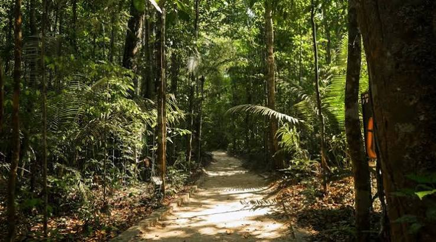

Um dia desses, dentro de um livro da biblioteca da escola, eu descobri uma carta antiga sobre a viagem de Roma-Itália, escondida por riquezas e belezas naturais. Nessa carta, a autora deixa algumas pistas para encontrar turistar nessa cidade e eu decidi segui-las!
Você pode começar sua jornada em Roma pelo Coliseu ao amanhecer
Em Pernambuco, você visita a histórica cidade de Olinda. Na carta, uma das pistas indica que para localizar a entrada para a cidade perdida você deve procurar a próxima pista em um dos pontos turísticos da cidade. Por qual você começa?